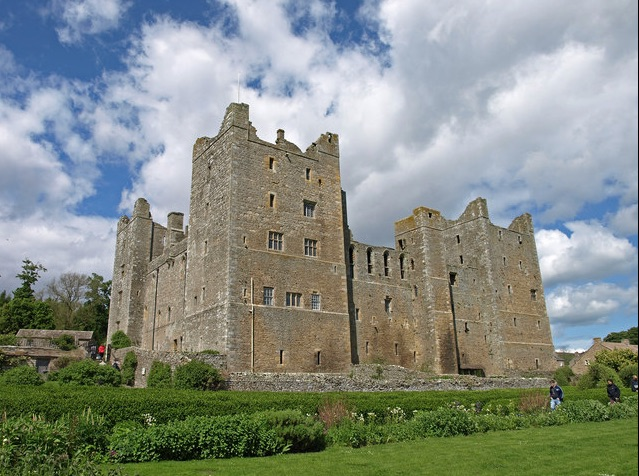

Elizabeth Scrope Born about 1439 in Bolton, Lancashire, England
Died: 12 Jun 1503 Buried: Stoke Rochford, Lincolnshire,England

Elizabeth "Isabel" de St John formerly Scrope aka Bigod, Rochford. Born about 1439 in Bolton, Lancashire, England
The Scropes were an important North Yorkshire family who spent a lot of time on the borders fighting the Scots.
Elizabeth married three times. Elizabeth Scope had been married firstly to John Bigod of Settrington. He died as a result of injuries sustained at the Battle of Towton in 1461. She then married Henry Rochford who died in 1470 though whether it was from natural causes or a nasty case of soldiering is unknown. When Elizabeth died in 1503 she was buried next to husband number two in Stoke Rochford. Her third marriage was to Oliver St John.
Elizabeth's brother had married Elizatbeth St John - Oliver's Sister. He was John Scrope, Baron Scrope of Bolton (Bolton Castle in Wensleydale) and another good Yorkist.
ANCESTORS
Daughter of Henry (Scrope) le Scrope and Elizabeth (Scrope) le Scrope
Sister of John (Scrope) le Scrope KG, Margaret (Scrope) Bernard, Elizabeth (Scrope) le Scrope, Richard (Scrope) le Scrope Esq., Ralph (Scrope) le Scrope, Agnes (Scrope) Boynton, Robert (Scrope) le Scrope and Eleanor (Scrope) le Scrope
Wife of Henry Rochford Esq — married [date unknown] [location unknown]
Wife of John Bigod — married 1456 in Settrington,,Yorkshire,England
Wife of Oliver St John — married 25 Oct 1470 [location unknown]
DESCENDANTS
Mother of Ralph Bigod, Elizabeth (St John) FitzGerald, John (St John) de St John and Eleanor (St John) Grey
Source
https://www.wikitree.com/wiki/Scrope-36
https://en.wikipedia.org/wiki/Bolton_Castle
https://thehistoryjar.com/tag/elizabeth-st-john/